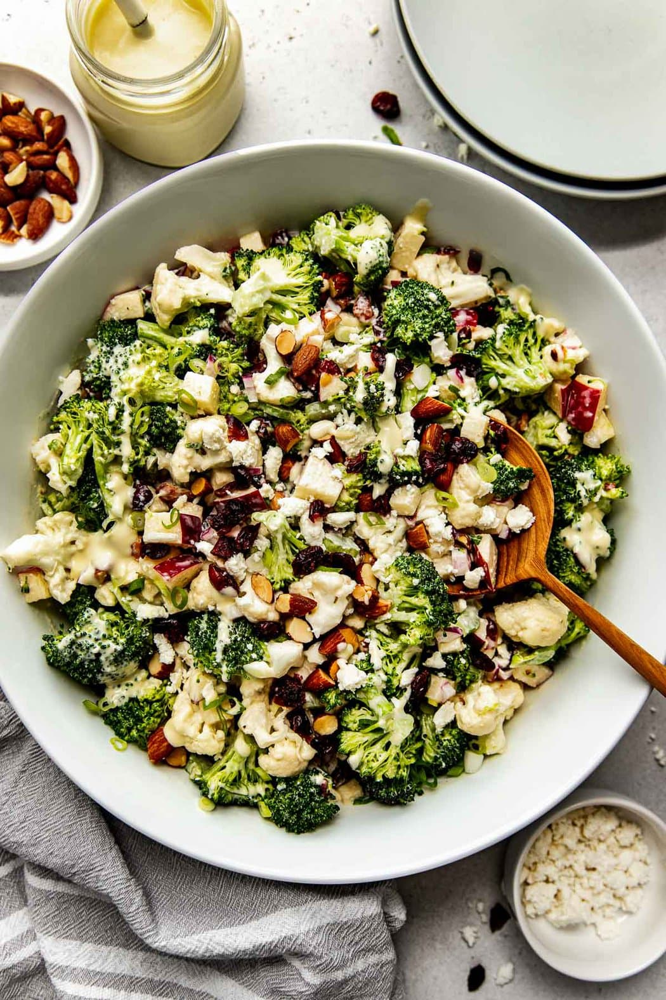

Ingredients
- 4 – 5 cups broccoli florets, chopped into bites size pieces (10–12 ounce bag)
- 2 ½ –3 cups cauliflower florets, chopped into bite size pieces (10-ounce bag)
- 1 medium apple, diced (1 ½ – 2 cups)
- ½ small red onion, diced (½ cup)
- 2 celery ribs, diced (½ cup)
- 2–3 green onion, thinly sliced (1/3 cup)
- ½ cup dried cranberries
- ½ cup feta cheese, crumbled (omit for dairy-free or Whole30)
- ½ cup lightly salted roasted almonds, roughly chopped (may substitute walnuts, pecans, or sunflower seed for nut free, etc.)
- ¼ cup olive oil or avocado oil
- 3 tablespoons lemon juice (1 lemon)
- 2 teaspoons honey (use maple syrup for vegan)
- 1 teaspoon garlic powder
- ½ teaspoon fine salt
- ¼ teaspoon black pepper
- ¾ cup mayo (use egg-free mayo for vegan)
For The Dressing:
Directions
- Make the dressing: in a small bowl combine the oil, lemon juice, honey, garlic powder, salt, and pepper. Whisk until well combined. Add the mayo and continue to whisk until well combine, about 2-3 minutes. Set aside.
- In a large bowl, toss together all of the salad ingredients – broccoli, cauliflower, apple, red onion, celery, green onion, dried cranberries, feta cheese, and almonds or walnuts.
- Add the dressing to the large bowl and toss until well combined. Let salad sit in the fridge for 30 minutes to allow veggies to marinate in the dressing (optional step but recommended)
- Store leftovers in an airtight container in the fridge for up to 4 days.